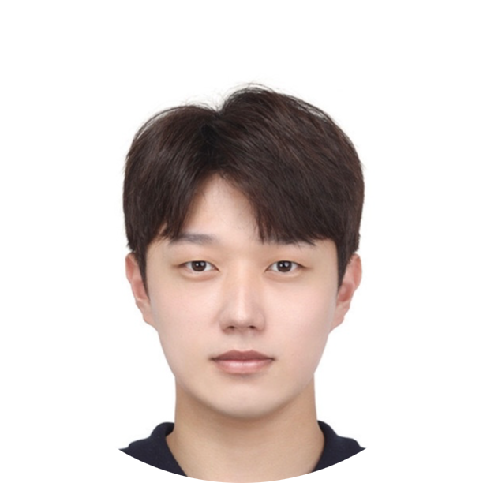

|
Kyungmin Lee
I am a PhD student at KAIST, advised by Jinwoo Shin.
Before my graduate studies, I was a researcher at Agency for Defense Development, working on Defense AI technology. I received my B.S. degrees in Mathematics and Electrical Engineering at KAIST in 2019.
My research interests span probabilistic machine learning, generative modeling, representation learning and their applications.
Email /
CV /
Google Scholar /
Twitter /
Github
|

|
Direct Consistency Optimization for Compositional Text-to-Image Personalization
Kyungmin Lee,
Sangkyung Kwak,
Kihyuk Sohn,
Jinwoo Shin
Preprint
Paper |
Project Page
|
DreamFlow: High-quality text-to-3D generation by Approximating Probability Flow
Kyungmin Lee,
Kihyuk Sohn,
Jinwoo Shin
To be apper at ICLR, 2024 (Spotlight Presentation)
OpenReview
|
Fine-tuning protein Language Models by ranking protein fitness
Minji Lee,
Kyungmin Lee,
Jinwoo Shin
NeurIPS Workshop on Generative AI and Biology, 2023
OpenReview |
Code
|
Collaborative Score Distillation for Consistent Visual Editing
Subin Kim*,
Kyungmin Lee*,
Junesuk Choi,
Jongheon Jeong,
Kihyuk Sohn,
Jinwoo Shin
NeurIPS, 2023
ICML Workshop on Structured Probabilistic Inference and Generative Modeling, 2023
Paper |
OpenReview |
Project page
|
S-CLIP: Semi-supervised Vision-Language Pre-training using Few Specialist Captions
Sangwoo Mo,
Minkyu Kim,
Kyungmin Lee,
Jinwoo Shin
NeurIPS,2023
Paper
|
Slimmed Asymmetrical Contrastive Learning and Cross Distillation for Lightweight Model Training
Jian Meng, Li Yang, Kyungmin Lee, Jinwoo Shin, Deliang Fan, Jae-sun Seo
NeurIPS, 2023
OpenReview
|
Bias-to-Text: Debiasing Unknown Visual Biases through Language Interpretation
Younghyun Kim*,
Sangwoo Mo*,
Minkyu Kim,
Kyungmin Lee,
Jaeho Lee,
Jinwoo Shin
ICML Workshop on Spurious Correlations, Invariance and Stability, 2023
Paper | Code
|
STUNT: Few-shot Tabular Learning with Self-generated Tasks from Unlabeled Tables
Jaehyun Nam,
Jihoon Tack,
Kyungmin Lee,
Hankook Lee,
Jinwoo Shin
ICLR, 2023 (Spotlight Presentation)
NeurIPS Workshop on Table Representation Learning, 2022
Bronze Prize, Samsung Humantech Paper Awards, 2023
Paper |
Openreview |
Code
|
RényiCL: Contrastive Representation Learning with Skew Rényi divergence
Kyungmin Lee,
Jinwoo Shin
NeurIPS, 2022
Paper |
Openreview |
Code
|
GCISG: Guided Causal Invariant Learning for Improved Syn-to-Real Generalization
Gilhyun Nam,
Gyeongjae Choi,
Kyungmin Lee
ECCV, 2022
Paper
|
Pseudo-spherical Knowledge Distillation
Kyungmin Lee,
Hyeongkeun Lee
IJCAI-ECAI, 2022
Paper
|
Representation Distillation by Prototypical Contrastive Predictive Coding
Kyungmin Lee
ICLR, 2022
NeurIPS Workshop on Self-supervised Learning: Theory and Practice, 2021
Paper |
Openreview
|
Provable Defense by Denoised Smoothing with Learned Score function
Kyungmin Lee
ICLR Workshop on Security and Safety in Machine Learning Systems, 2021 (Travel Award)
Paper
|
|
{kind=link}